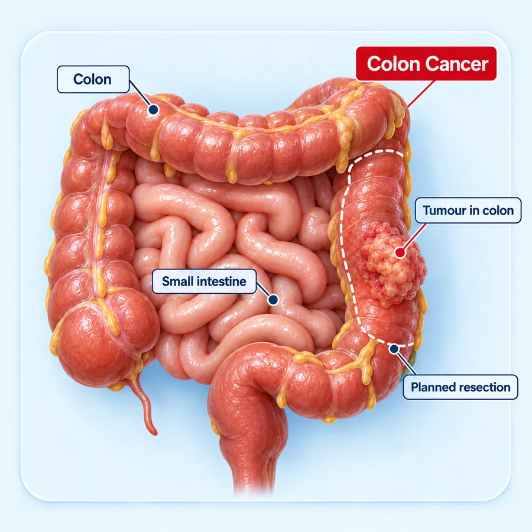
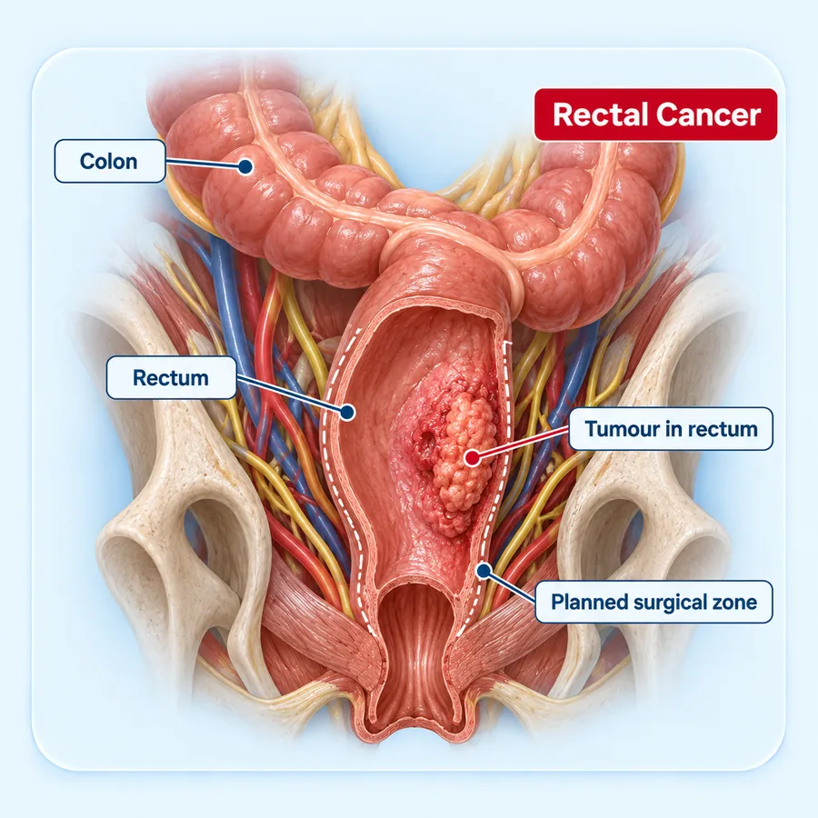
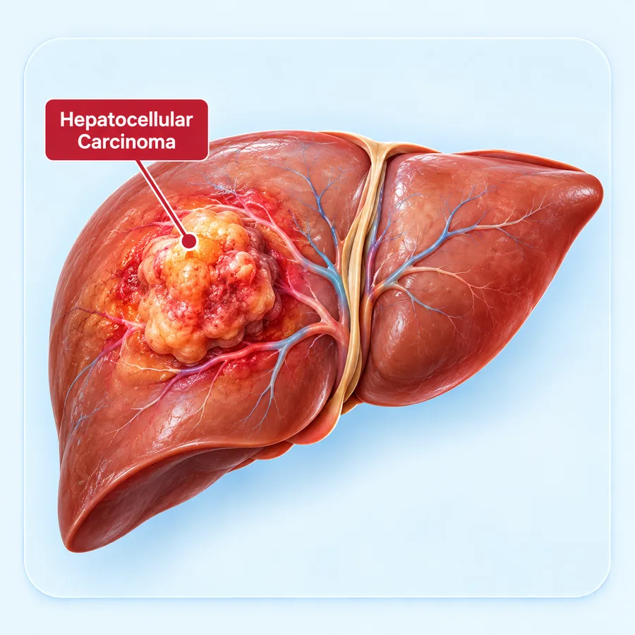

Difficulty Swallowing
Food sticking on the way down, which may get steadily worse over weeks.

Advitya Healthcares · Kolkata & Baruipur
KolkataBaruipur
Consultation venue and timings confirmed at the time of booking
WhatsApp UsGI cancer surgery treats cancers of the digestive system. At Advitya Healthcares it is delivered by the GI Cancer Surgery department, within a surgical oncology practice experienced in complex abdominal disease, with consultations in Kolkata and Baruipur. Non-cancer digestive surgery has a page of its own.
Your biopsy and scan reports, endoscopy findings, blood tests and overall health are all considered before a plan is made. Whether surgery comes first, whether chemotherapy or radiotherapy is given before or after it, and whether an open or minimally invasive approach is suitable, is decided after staging and multidisciplinary review.
The surgical team is led by Dr. Deeksha Kapoor, a surgical gastroenterologist and HPB & GI surgical oncologist. She trained in surgical gastroenterology at Medanta – The Medicity, completed an HPB & GI Surgical Oncology Fellowship at Tata Memorial Hospital, Mumbai, is console-trained in robotic surgery on the Da Vinci Xi platform, and has pursued advanced HPB training in Japan, Germany and France. She leads the PancreaCare initiative at Advitya Healthcares.
Before surgery you are told what the operation involves, what will be removed, what other treatment is planned and what recovery looks like. After surgery the pathology report is explained to you, together with the follow-up plan. A second opinion on an existing diagnosis or treatment plan is also welcome.
These symptoms usually have other causes. If they last more than two to three weeks, they deserve a proper evaluation.
Food sticking on the way down, which may get steadily worse over weeks.
Indigestion, vomiting or feeling full early that does not settle with usual treatment.
Blood in or on the stools, or black, tarry stools.
Constipation, diarrhoea or thinner stools lasting more than a few weeks.
Losing weight without trying, or tiredness that may come from slow blood loss.
Yellowing of the eyes or skin, particularly without pain.
Vomiting blood, passing a large amount of blood, being completely unable to swallow or to pass stools, severe abdominal pain or rapidly increasing jaundice require same-day assessment.
24×7 Emergency +91 92112 21553
GI cancer is cancer of the digestive system — the oesophagus, stomach, colon and rectum, and the liver, pancreas, gallbladder and bile ducts.
Most begin in the lining of the digestive tract or in the cells of the glands around it. Each organ has its own types of cancer, its own pattern of spread and its own operations, which is why each is assessed on its own terms.
Early GI cancers often cause vague symptoms or none. Found at an early stage, many can be removed completely; the same cancer found later may need more extensive treatment.
Before treatment, scans, endoscopy and biopsy show the type of cancer and how far it has spread. The stage decides whether surgery is possible and whether other treatment should come first.
Surgeons, medical and radiation oncologists, gastroenterologists, radiologists and pathologists each see a different part of the picture. Reviewing the case together leads to a single, agreed plan.
Treatment should be planned on biopsy, staging imaging and multidisciplinary review of your individual case.
The digestive cancers treated by the surgical team. Each links to a page with more detail.

Cancers of the food pipe and stomach, treated with gastrectomy or oesophageal surgery, often combined with chemotherapy before and after the operation.
Explore stomach cancer surgery
Removal of the affected segment of colon with its lymph nodes (colectomy), by open or minimally invasive surgery.
Explore colorectal surgery
Rectal cancer surgery, often after chemoradiotherapy, with the aim of removing the cancer completely and preserving bowel function where possible.
Explore colorectal surgery
Liver resection for primary liver cancer and for cancers that have spread to the liver, keeping enough healthy liver for recovery.
Explore liver cancer surgery
The Whipple procedure for tumours of the head of the pancreas and distal pancreatectomy for the body and tail, planned on dedicated staging scans.
Explore pancreatic cancer surgery
Radical cholecystectomy for gallbladder cancer, and bile duct resection — often with part of the liver — for cholangiocarcinoma.
Explore biliary surgeryGIST, neuroendocrine tumours and other less common digestive tumours are also assessed. Suitability for surgery is confirmed after staging and multidisciplinary review.
The type of cancer and how far it has spread are established before any treatment is decided.
Symptoms, examination, family history and any previous reports are reviewed.
A camera examination of the oesophagus, stomach or bowel shows the tumour directly.
A small sample of tissue confirms the diagnosis and the type of cancer.
Scans show the size of the tumour, the lymph nodes and any spread to other organs.
Blood tests, tumour markers where relevant, and PET-CT when it adds information.
The specialist team reviews the results together and agrees the treatment plan.
Most patients need more than one kind of treatment. The order matters as much as the treatments themselves.
The tumour is removed with a margin of healthy tissue and the nearby lymph nodes, and the digestive tract is reconnected. The lymph nodes are examined to complete the staging.
Laparoscopic or robotic-assisted surgery through small incisions, following the same cancer principles as open surgery — a clear margin and removal of the lymph nodes.
Given before surgery to shrink a tumour, after surgery to lower the risk of the cancer returning, or on their own where surgery is not suitable — by the appropriate oncology specialist.
Where a cancer cannot be removed, treatment focuses on controlling it and relieving symptoms — stents or bypass for a blockage, nutrition support and pain control.
No treatment is decided in advance of staging. What is appropriate for you is agreed after examination, investigations and multidisciplinary review, and explained to you before it begins.
Specialist cancer care with a patient-first approach.
GI cancer surgery led by a surgeon with an HPB & GI Surgical Oncology Fellowship from Tata Memorial Hospital.
Surgeons, oncologists, gastroenterologists, radiologists and pathologists review each case together.
Endoscopy, biopsy, CT, MRI and PET-CT reviewed together before treatment is decided.
Open, laparoscopic and robotic-assisted cancer surgery considered according to clinical suitability.
An independent review of an existing diagnosis, scans or treatment plan.
Clear communication before surgery, during recovery and throughout follow-up, in Kolkata and Baruipur.
Your symptoms, reports and medical history are reviewed.
Endoscopy, biopsy and scans establish the type and stage.
A plan is agreed at multidisciplinary review and explained to you.
Surgery, with chemotherapy or radiotherapy before or after where advised.
Monitored recovery, nutrition support and a gradual return to activity.
Regular reviews, blood tests and scans to watch for recurrence.
Consultation, treatment and follow-up organised around the patient.
GI cancer care delivered by a specialist surgical oncology team.
Consultation, theatre, imaging and endoscopy facilities used for planned cancer surgery.
Time to discuss your scans, reports, treatment options and recovery.
Consultations available in Kolkata and Baruipur.
General information only. Advice for your own condition comes from your consultation.
No. Treatment depends on the type of cancer, where it is, its stage and your general health. Surgery is the main treatment for many GI cancers when the tumour can be removed completely, but some are treated with chemotherapy, radiotherapy, endoscopic treatment or a combination.
Staging describes how far a cancer has grown and whether it has spread to lymph nodes or other organs. It is worked out from scans, endoscopy and biopsy results, and it decides which treatment is offered first.
Many patients do. For some cancers, such as many stomach, oesophageal and rectal cancers, treatment is given before surgery to shrink the tumour; for others it is given after surgery to lower the risk of the cancer returning. The plan is agreed through multidisciplinary review.
For selected patients, yes. When it is suitable, minimally invasive cancer surgery follows the same cancer principles as open surgery — removing the tumour with a clear margin and the surrounding lymph nodes. Suitability depends on the cancer, its stage and your previous surgery.
It depends on the operation. Major stomach, bowel, liver or pancreatic surgery usually means several days to a few weeks in hospital and several weeks of recovery at home. Your surgical team gives you a realistic timeline before surgery.
Regular follow-up visits with examinations, blood tests and scans at intervals set for your type and stage of cancer, together with support for nutrition and recovery.
Vomiting blood, passing a large amount of blood or black stools, being completely unable to swallow or to pass stools, severe abdominal pain or rapidly increasing jaundice need urgent assessment. Go to your nearest emergency department the same day.
Consult our surgical oncology team for evaluation, staging and personalized treatment planning.
Six fields, nothing clinical. We will call you back to confirm.